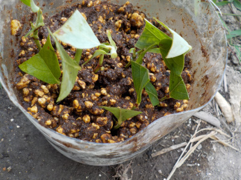
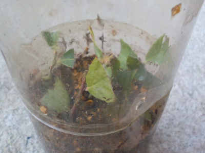
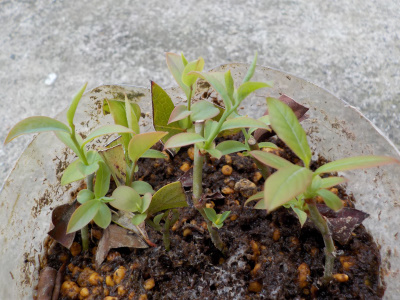
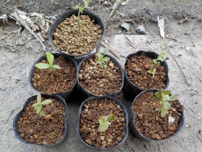
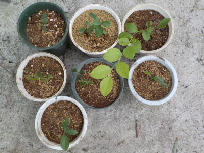

更新日 : 2019/08/04

普通に挿し木しても根が出るブルーベリーですが、８月は無理かなと思ってペットボトルで試してみました。
実験です。
そもそもペットボトルの密閉式高水蒸気挿し木自体が有効なのかわからないんですけどね。
もしも出来たらとっても楽チン。
成功したら来年もやろう!失敗したらもう止めようって思っています。
更新日 : 2019/11/09

8月にペットボトルで挿し木したブルーベリーですが、葉っぱが緑で落ちてないのでたぶん成功です。
水やりいらずで楽々です。
これから毎年これで増やそう。
更新日 : 2020/03/29

久々にペットボトルの挿し木を見たら、新芽が出ていました。

大きくなるように、ポットに分けて植え替えしました。
7本全部が大きく育つといいですね。
更新日 : 2020/08/09

小さいポットで育てていたんですが、1本以外は成長しなかったので大きい鉢に植え替えしました。
環境を変えたら成長するかなーと思ってやってみました。
土の量が増えて保水も増えるので、今までよりも多く日光に当てれます。
冬までに出来るだけ大きく育って欲しいです。
ペットボトルの密閉挿しは、ほぼ管理しなくていいのがいいです。